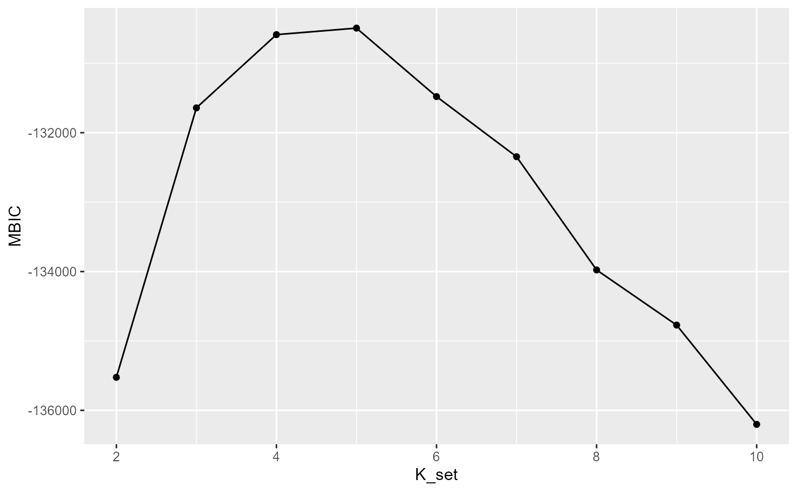

SC.MEB_CRC.RmdThe package can be loaded with the command:
library("SC.MEB")
#> Loading required package: mclust
#> Warning: package 'mclust' was built under R version 4.0.5
#> Package 'mclust' version 5.4.7
#> Type 'citation("mclust")' for citing this R package in publications.
file = system.file("extdata", "CRC3.rds", package = "SC.MEB")
CRC = readRDS(file)SC-MEB requires minimal data pre-processing, but we provide a helper function to automate it.
spatialPreprocess() log-normalizes the count matrix and performs PCA on the top n.HVGs highly variable genes, keeping the top n.PCs principal components. Additionally, the spatial sequencing platform is added as metadata in the SingleCellExperiment for downstream analyses. If you do not wish to rerun PCA, running spatialPreprocess() with the flag skip.PCA=TRUE will only add the metadata SC-MEB requires.
set.seed(114)
library(scuttle)
library(scran)
library(scater)
library(BiocSingular)
CRC <- spatialPreprocess(CRC, platform="Visium")Here, we set the basic paramters for our function SC.MEB
platform = "Visium"
beta_grid = seq(0,4,0.2)
K_set= 2:10
parallel=TRUE
num_core = 3
PX = TRUE
maxIter_ICM = 10
maxIter = 50
Adj_sp <- find_neighbors2(CRC, platform = "Visium")
Adj_sp[1:10,1:10]
#> 10 x 10 sparse Matrix of class "dgCMatrix"
#>
#> [1,] . 1 1 . . . . . . .
#> [2,] 1 . 1 1 . . . . . .
#> [3,] 1 1 . 1 1 . . . . .
#> [4,] . 1 1 . 1 1 . . . .
#> [5,] . . 1 1 . 1 1 . . .
#> [6,] . . . 1 1 . 1 1 . .
#> [7,] . . . . 1 1 . 1 1 .
#> [8,] . . . . . 1 1 . 1 1
#> [9,] . . . . . . 1 1 . 1
#> [10,] . . . . . . . 1 1 .
y = reducedDim(CRC, "PCA")[,1:15]
fit = SC.MEB(y, Adj_sp, beta_grid = beta_grid, K_set= K_set, parallel=parallel, num_core = num_core, PX = PX, maxIter_ICM=maxIter_ICM, maxIter=maxIter)
#> Starting parallel computing...
str(fit[,1])
#> List of 9
#> $ x : num [1:2988, 1] 1 1 1 1 1 1 1 1 1 1 ...
#> $ gam : num [1:2988, 1:2] 1 1 1 1 1 ...
#> $ pxgn : num [1:2988, 1:2] 0.9 0.996 0.988 0.999 0.988 ...
#> $ pygx : num [1:2988, 1:2] 17.6 17.9 29.8 33.4 24 ...
#> $ mu : num [1:15, 1:2] 4.3901 -0.5644 0.1234 -0.112 0.0292 ...
#> $ sigma : num [1:15, 1:15, 1:2] 5.1413 -1.8014 -1.6297 0.0905 -1.0883 ...
#> $ beta : num 2.2
#> $ ell : num 65515
#> $ loglik: num [1:2, 1] 66216 66254
selectKPlot(fit, K_set = K_set, criterion = "MBIC")